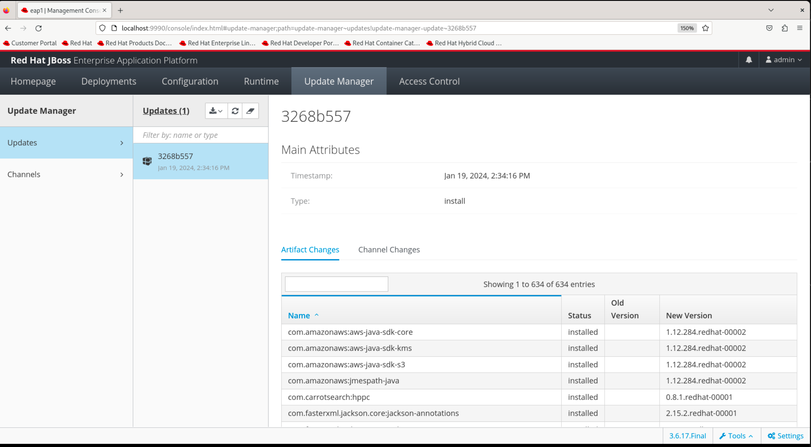
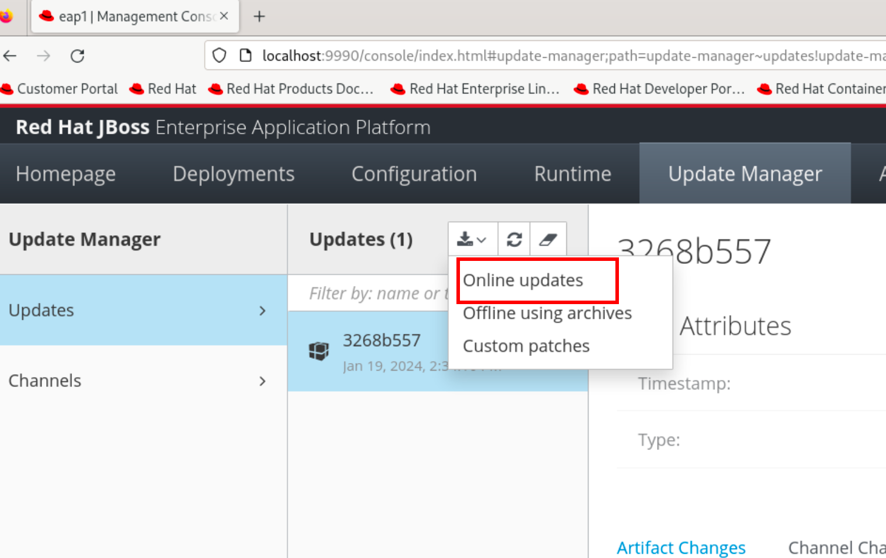
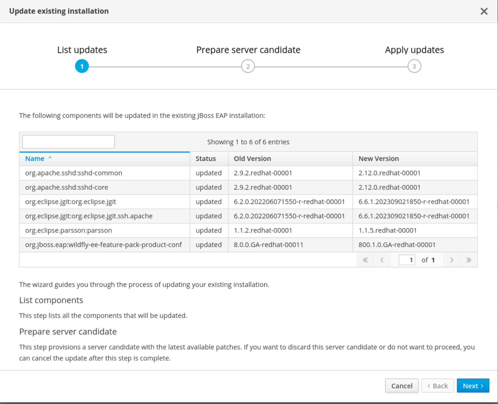
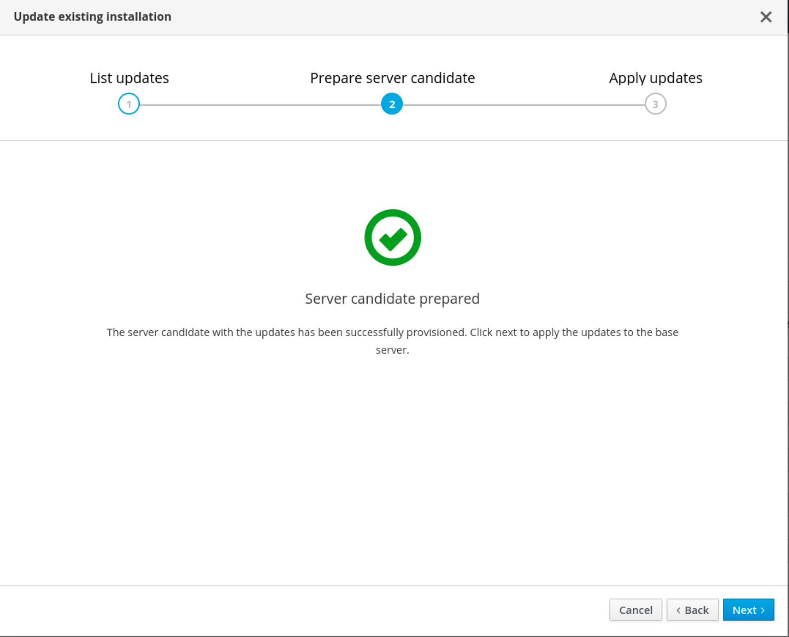
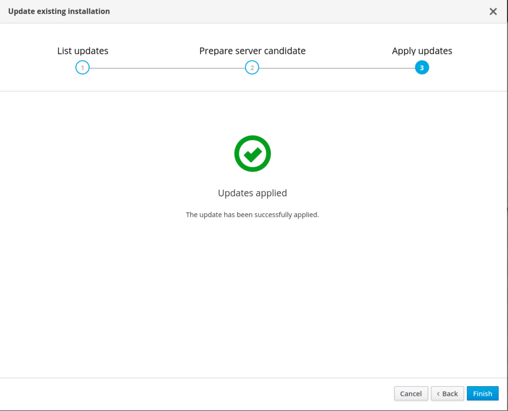
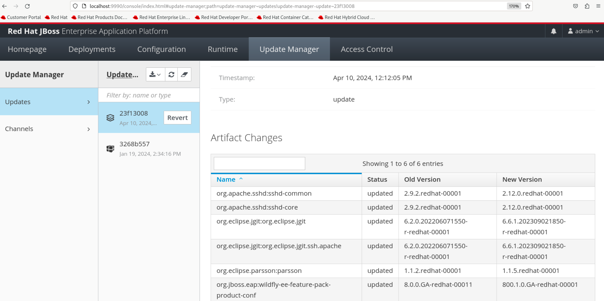
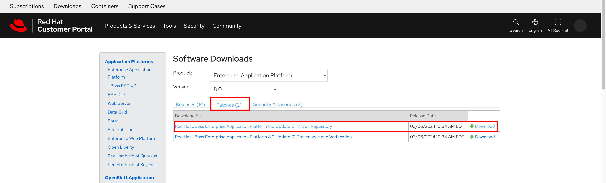

Patching and Updating JBoss EAP
One of the most important tasks for an EAP administrator is to apply patches and updates at regular intervals to keep the JBoss EAP runtime environment safe from security vulnerabilities and other bugs.
JBoss EAP offers a number of different ways to apply patches and update the runtime environment:
-
JBoss EAP Installation Manager
-
JBoss EAP CLI
-
JBoss EAP Web console
-
RPM
Refer to the Update Methods table in the product documentation for deciding on which method you prefer.
Updating JBoss EAP Using RPM
This method is simple and easy to use if you already installed JBoss EAP using yum or dnf commands.
Ensure that you are subscribed to the relevant JBoss EAP repository (jb-eap-8.0-for-rhel-9-x86_64-rpms) for receiving updates. See Installing JBoss EAP using RPM method for more details.
Simply run dnf update or yum update periodically to fetch the latest JBoss EAP updates.
Updating JBoss EAP Using the Installation Manager
Newly introduced in EAP 8.0, the jboss-eap-installation-manager tool provides access to the most recent supported versions of JBoss EAP components.
jboss-eap-installation-manager uses the concept of a channel to manage software components. A channel consists of a curated list of component versions (called channel manifest), and a collection of repositories used to resolve and retrieve those components.
Each repository has a unique name (id) and a default Maven repository URL. The jboss-eap-installation-manager allows you to manage these channels effectively in both standalone and managed domain configurations.
The jboss-eap-installation-manager tool is available in the bin folder of an EAP installation, and can also be downloaded from the Red Hat Customer Portal.
Updating JBoss EAP Using the JBoss EAP CLI
Starting with JBoss EAP 8.0, the jboss-eap-installation-manager tool is the preferred tool for applying updates and patches, except in cases where you want to update remote JBoss EAP 8.0 instances.
If you are updating or reverting a local JBoss EAP installation, the jboss-eap-installation-manager is recommended instead of the EAP Management CLI. However, you cannot use the jboss-eap-installation-manager to update or revert a remote JBoss EAP installation. In this scenario, use the EAP Management CLI.
|
In JBoss EAP 8.0, the jboss-eap-installation-manager operations are integrated into the JBoss EAP CLI, allowing you to update and revert your remote server installations without the need to log in to the remote machine and use the jboss-eap-installation-manager from the operating system command line.
Refer to the Managing your JBoss EAP server installation using the Management CLI section of the product documentation for a list of operations you can run using the JBoss EAP CLI.
Updating JBoss EAP Using the JBoss EAP Web console
You can update and patch your JBoss EAP installation using the EAP web console. The JBoss EAP web console also allows you to perform other operations such as, viewing the history of your updates, reverting JBoss EAP updates to a previous version, and managing channels. The web console offers the same operations as the jboss-eap-installation-manager CLI in a convenient web based interface.
Refer to the Updating your JBoss EAP server using the web console section of the product documentation for usage instructions.
Lab: Updating and Patching JBoss EAP
Pre-requisites
Since online installs using the GUI JAR installer or the Installation Manager always installs the latest patches and updates, to do this lab we recommend that you install the base JBoss EAP 8.0 GA version by downloading the JBoss EAP 8.0 zip archive. You will install the base version and apply patches to it.
| You can perform any ONE of the methods listed below. There is no need to do both. |
Updating and Patching JBoss EAP using the Web Console
In this lab, you will update an existing JBoss EAP 8.0 installation using the EAP web console in online mode. You need internet access from the machine where you are running JBoss EAP 8.0.
-
Download the JBoss EAP 8.0 zip archive from the Customer Portal as shown in the pre-requisites section.
-
Unarchive the zip archive in a folder of your choice under your home directory. Refer to the previous section on installing JBoss EAP 8.0 from a zip archive. You need to create a password for the
adminuser to access the web console. -
Start JBoss EAP in standalone mode
$ cd $EAP_HOME/bin # location where you unarchived the EAP 8.0 zip file $ ./standalone.sh -
Log in to the EAP web console using as the
adminuser. -
Click
Update Manager. It shows the base version is installed and lists the components and their versions contained in this base release.Figure 2. JBoss EAP Update Manager page in web console -
In the
Updatescolumn, click theInstallation update methodsbutton (small button with a downwards arrow) and selectOnline updates.Figure 3. Check for updates onlineYou can also choose to update offline by selecting the Offline using archives. You will be prompted to upload a local copy of the update zip file that you can download from the Customer Portal. Whichever method you choose, the following steps and screenshots should be similar. -
You will be shown the updates that are available. Click
Next.Figure 4. Show Available Updates -
The web console will fetch the updates and display a
Server candidate preparedmessage. ClickNext.Figure 5. Updates fetched and ready to install -
The updates will be applied and the server restarted. Click
Finish.Figure 6. Updates applied successfully -
The
Update Managerscreen should now show a new entry with a unique ID and it will show you the list of components updated along with the old and new versions.Figure 7. New Update Unique ID -
You can apply similar such updates when they become available. Each update will be applied and a new unique ID will be generated. You can revert to specific update versions using this unique ID through the web console or the EAP CLI.
Updating and Patching JBoss EAP using the JBoss EAP CLI
| If you performed the update using the web console as outlined in the previous lab, then you will not see any new updates from the EAP CLI. |
-
Repeat steps 1-3 from the Updating and Patching JBoss EAP using the Web Console lab to download and extract the base JBoss EAP 8.0 release to a new folder. Create a new
adminmanagement user with a password using theadd-user.shscript. -
Connect to the existing EAP 8.0 server using the EAP CLI. Check the existing version:
$ cd $EAP_HOME/bin $ ./jboss-cli.sh --connect [standalone@localhost:9990 /] version ... Release: 21.0.5.Final-redhat-00001 Product: JBoss EAP 8.0.0.GA ... -
If you want to do an offline update, then log in to the Customer Portal and download the updates as a zip archive. You can also use the same zip file when you use the web console
Update Managerto update your JBoss EAP release. -
Extract the zip file containing the updates into a folder.
-
Prepare the update from the JBoss EAP CLI using the installer update command and pass the folder location where you extracted the updates zip file as an argument:
[standalone@localhost:9990 /] installer update \ --offline \ --repositories=file:///tmp/jboss-eap-8.0.1.GA-maven-repository/maven-repository Updates found: org.apache.sshd:sshd-common 2.9.2.redhat-00001 ==> 2.12.0.redhat-00001 org.apache.sshd:sshd-core 2.9.2.redhat-00001 ==> 2.12.0.redhat-00001 org.eclipse.jgit:org.eclipse.jgit 6.2.0.202206071550-r-redhat-00001 ==> 6.6.1.202309021850-r-redhat-00001 org.eclipse.jgit:org.eclipse.jgit.ssh.apache 6.2.0.202206071550-r-redhat-00001 ==> 6.6.1.202309021850-r-redhat-00001 org.eclipse.parsson:parsson 1.1.2.redhat-00001 ==> 1.1.5.redhat-00001 org.jboss.eap:wildfly-ee-feature-pack-product-conf 8.0.0.GA-redhat-00011 ==> 800.1.0.GA-redhat-00001 Would you like to proceed with preparing this update? [y/N]:If you want to do an online update, then your server should have access to the internet. Run installer update command in the JBoss EAP CLI and you will see the same set of updates as the offline option. -
Press y and hit enter to prepare the update. Wait while the runtime is checked and the CLI prompts you to run the perform-installation command.
-
Apply the update. The CLI will disconnect while the updates are being applied.
[standalone@localhost:9990 /] shutdown --perform-installation -
Reconnect to the server using the JBoss EAP CLI, and verify that the updates have been applied:
$ cd $EAP_HOME/bin $ ./jboss-cli.sh --connect [standalone@localhost:9990 /] version ... Release: 21.0.5.Final-redhat-00001 Product: JBoss EAP 8.0 Update 1.0 ... -
You can view the history of updates that you applied by running the installer history command:
[standalone@localhost:9990 /] installer history ... Release: 21.0.5.Final-redhat-00001 [dfe9268a] ... - update [org.jboss.eap.channels:eap-8.0::1.1.0.GA-redhat-00001] [3268b557] ... - install [org.jboss.eap.channels:eap-8.0::1.0.1.GA-redhat-00003]You can revert to a specific version by running the installer revert --revision=xxxxxxxx command and passing it the unique ID of the update (first column values in the history output)
(Optional) Challenge Lab: Updating using the JBoss EAP Installation Manager
This is an optional lab where you will update an existing JBoss EAP installation using the JBoss EAP Installation Manager.
-
From the Customer Portal download the base EAP 8.0.0 GA release zip archive and the latest JBoss EAP Installation Manager zip file.
-
Extract the zip archive in a folder of your choice.
-
Extract the JBoss EAP Installation Manager zip file to a different directory.
-
Follow the instructions in the product documentation at Updating JBoss EAP using the jboss-eap-installation-manager to update your existing JBoss EAP 8.0.0 installation (HINT: Use the update list --dir command, where dir indicates the full path to your existing JBoss EAP install)